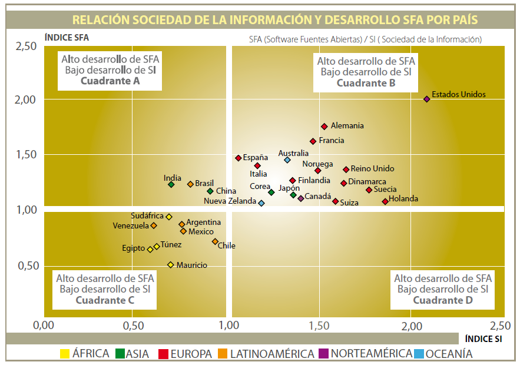

¿No es gracioso?
En Manzana Mecánicas mencionan un informe sobre el panorama internacional del software de Fuentes Abiertas 2010. Bonito estudio, un tanto largo. Cuando empecé a hojearlo me llamó la atención una serie de gráficos como este:

¿Qué significan esos gráficos? (hay varios en el informe)
El eje horizontal es el indice de desarrollo de la sociedad de información, y el eje vertical el índice de desarrollo de software de fuente abierta (SFA), además se dividen los cuadrantes, la idea es mostrarnos el cuadrante mágico (arriba derecha), que se supone es lo mejor.
¡Ajáh!, dice el talibán del SFA, al haber mayor código de fuente abierta las sociedades mejoran en su índice de desarrollo como sociedad de la información.¡Pero no es eso(*)!
Bueno los autores del informe se abstienen de decir algo tan burdo, mal que mal es sólo un panorama, un vistazo de cómo están las cosas, así que no hay conclusiones duras de ese tipo. Igual leo el resumen ejecutivo, que dice, en su último párrafo (donde normalmente van las conclusiones, ¿cierto?):
El modelo de desarrollo del software de fuentes abiertas es un modelo globalizante donde los actores participan a través de Internet en diferentes proyectos en un entorno de cooperación, independientemente de la nacionalidad del actor o del proyecto, sin que existan diferencias por zonas geográficas ni en el funcionamiento de las comunidades ni en los modelos de negocio asociados.
¡Já! digo yo, ¿y por qué me río?, por esto:
El modelo de cloud computing es un modelo globalizante donde los actores participan a través de Internet en diferentes proyectos en un entorno de cooperación, independientemente de la nacionalidad del actor o del proyecto, sin que existan diferencias por zonas geográficas ni en el funcionamiento de las comunidades ni en los modelos de negocio asociados.
Hace poco leyendo un artículo sobre las oportunidades del cloud computing para los paises en vías de desarrollo (o emergentes, como se les dice ahora), leí una conclusión casi idéntica a ese párrafo de arriba, así que no pude dejar de hacer el experimento de substituir cloud computing por desarrollo del software de fuentes abiertas y ver que pasaba, y salvo un par de detalles que habría que ajustar, se dice básicamente lo mismo.
¿No es gracioso?
(*) Para los despistados, hay muchas maneras de interpretar esta correlación, pero la más lógica y simple (¿qué decía Ockham?) es que el SFA siempre va a ir correlacionado con el nivel de desarrollo de la SI, esto es tautológico. ¡Mayor desarrollo de una sociedad de información significa más cantidad de programadores y universidades que evidentemente van a generar más software de fuente abierta! Estos indicadores no demuestran nada en realidad.